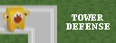

Wii TowerDefense Documentation
v0.97

Welcome to the TowerDefense documentation.
WiiTowerDefense is a 2D classic game for the Nintendo Wii.
Website: http://www.plaatsoft.nl
Code: http://code.google.com/p/wiitowerdefense
Documentation: wplaat
- Added dragable game information panels
13-09-2010 Version 0.97
- GUI:
- Update menu screen information.
- Core:
- Improve wave release time calculation.
- Solve random freeze problem during startup of game.
- General:
- Build game with devkitPPC r21 compiler.
11-09-2010 Version 0.96
- GUI:
- Update menu screen information.
- Core:
- Use GRRLIB 4.3.0 as graphical engine.
- libpng was updated to version 1.4.2
- libjpeg was updated to version 8b
- zlib was updated to version 1.2.5
- FreeType was updated to 2.3.12
- General:
- Maintenance release.
- Build game with devkitPPC r21 compiler.
31-03-2010 Version 0.95
- GUI:
- Update menu screen information.
- Core:
- WiiMote timeout increase from 60 to 300 seconds.
- Improve stability.
- Use libfat 1.0.7 as disk access engine.
- Use libogc 1.8.3 as Wii interface engine
- General:
- Make source code compliant with r21 compiler.
- Build game with devkitPPC r21 compiler.
05-02-2010 Version 0.94
- GUI:
- Improve video initialization.
- Overall FPS has improved 50 percent. Thanks Crayon.
- Lots of other small GUI changes.
- Core:
- Mixed the weapon fire mode a little bit more!
- Nuke is 500 dollar cheaper!
- Increase http buffer size to 10Kb.
- Use GrrLib 4.2.1 BETA library (Now native FreeType support available).
- General:
- Added inline source code remarks in javadoc style.
- Use Doxygen (windows tool) to create HTML source code documentation.
- Build game with devkitPPC r19 compiler.
22-01-2010 Version 0.93
- GUI:
- Added weapon fire mode information on weapon help screen.
- Improve weapon reload delay initialisation.
- Added donate screen.
- Bugfix Weapon fire sprites were 22 degree misaligned.
- Core:
- Introduce different weapon fire modes.
- Fire at enemy in range nearest to base (Gun + Rifle)
- Fire at enemy in range with highest energy level (Cannon + Missile).
- Fire at fastest enemy in range (Laser + Nuke).
- Rebalance weapon specifications. Mix features more!
- General:
- Build game with devkitPPC r19 compiler.
16-01-2010 Version 0.92
- GUI:
- Added 6 animated weapons. Thanks Applicant!
- Improve enemy animated sprite frame sequence.
- Improve help and level select screens.
- Lots of other small changes.
- Core:
- Weapons now fire on strongest enemy in range.
- Increase bonus money when wave is cleared.
- Increase initial weapon power.
- Decrease weapon prices.
- Added weapon sell functionality with minus button.
- User initials are now default based on Wii nickname.
- Bugfix: Monsters can not be shooted before launch.
- General:
- Build game with devkitPPC r19 compiler.
09-01-2010 Version 0.91
- GUI:
- Added 25 animated enemy sprites. Thanks Applicant!
- Added game setting screen.
- Added intro screen 3.
- Improve winter theme sprites.
- Improve help screens.
- Improve main menu screen.
- Lots of other small changes.
- Core:
- Less start money.
- Enemy minimum / maximum speed depend on wave nr.
- Increase weapon prices.
- Increase maximum concurrent monsters in action.
- Decrease weapons effective range.
- General:
- Build game with devkitPPC r19 compiler.
02-01-2010 Version 0.90
- GUI:
- Improve background images.
- Remove some english typos.
- Improve first intro screen.
- Added WiiMote control help screen.
- Core:
- Improve first music track.
- Enable B button for faster building.
- Enable left and right button for faster weapon type selection.
- General:
- Build game with devkitPPC r19 compiler.
30-12-2009 Version 0.80
- GUI:
- Added map id column to local highscore screen.
- Improve background images.
- Remove typo (nuck->nuke).
- Added 60Hz (640x480 pixel) TV Mode support.
- Improve sound setting screen.
- Optimised enemy images.
- Core:
- Adapt game parameters to make game play better.
- Increase start money depending on game level.
- Enemy walk speed is now a randomized value.
- Map id information is added to webservice call.
- Only scores above 20.000 points are send to webservice.
- Store the best 100 entries in the local highscore.
- General:
- Build game with devkitPPC r19 compiler.
27-12-2009 Version 0.70
- GUI:
- Added "Easy, Medium, Hard" level select screen.
- Added six medium level and six hard level maps.
- Added version information is webservice call.
- BugFix: Highscore screens now show correct amount of entries!
- Core:
- Adapted weapon specifications (Weapons are more powerfull).
- Adapted enemy specifications (enemies are less powerfull).
- Adapted six easy maps to be more easy.
- Increase enemy walk speed after each 20 waves.
- General:
- Build game with devkitPPC r19 compiler.
24-12-2009 Version 0.60
- GUI:
- Update credit screen.
- Improve game information panel design.
- Show price and strengh information about new weapons.
- Show detail information about selected weapon.
- Show mini enemies moving on map select screen.
- Bugfix: Map six background images are now showed correct.
- Snap weapons to 32x32 grid!
- Core:
- Increase enemy walk speed after each 25 waves.
- Only allow to build weapons on land (not bridges or road).
- Not allowed anymore to stack weapons on same place.
- BugfiX: The rumble is now working for all the four WiiMotes.
- General:
- Build game with devkitPPC r19 compiler.
20-12-2009 Version 0.50
- GUI:
- Improve "Game Over" screen.
- Improve game information panel on screen.
- Improve scroll bar button design.
- Improve Help text.
- Core:
- Reduced amount of enemies in one wave.
- Increase user initials for 3 to 6 digits.
- Balance sound effect volume.
- Improve weapons upgrade ranges.
- Use GRRLib v4.2.0 as graphic engine.
- General:
- First official release for the Wii Homebrew Scene.
- Process most of the comments of the Beta testers.
- Build game with devkitPPC r19 compiler.
18-12-2009 Version 0.45
- GUI:
- Added game map 4, 5 and 6.
- Show when weapon upgrade is not possible anymore!
- Added reload bar move weapon.
- Added remaining energy bar below the base.
- Rendering realtime grid examples on map select screen.
- Added help screen two and three.
- Added "Quit Game" screen.
- Placing weapons under the information panel is not allowed anymore.
- Added today and global Highscore screen.
- Added release notes screen.
- Added dynamic weapon placement on the gameboard.
- Added Release Notes screen.
- Core:
- Load map images (sprites) directly from SdCard.
- Improve objects cleanup when stopping game.
- Limit weapon upgrade levels.
- Added WiiMote rumble support when pointer is on a button.
- Improve button pointer detection area.
- Added bonus cash (score) when wave is cleared.
- Fetch latest available version information from internet.
- Fetch latest release notes information from internet.
- Fetch Global and today highscore from internet.
- Added functionality to store game score on internet.
- Added Google analistics network calls.
- General:
- Beta release for testers.
- Build game with devkitPPC r19 compiler.
13-12-2009 Version 0.40
- GUI:
- Added music & effect control screen.
- Added wave launch button on game board.
- Added game information panel.
- Added functionality to upgrade power, range and rate of weapon.
- Added Map Select menu screen.
- Added Local highscore screen.
- Added User Initials screen.
- Added Credits screen.
- Added Help screen.
- Improve main menu screen.
- Core:
- Added basic weapon fire graphic effect.
- Added event engine.
- Added nigh tracks background music.
- Added game sound effects.
- Added continues monster wave principle.
- Added functionality to load/save local highscore from/to SD card.
- Added functionality to load/save game settings from/to SD card.
- Added functionality to make screenshots (Press + button).
- General:
- Build game with devkitPPC r19 compiler.
06-12-2009 Version 0.30
- GUI:
- Added third game map.
- Added water and bridge map component.
- Added very basic main menu screen.
- Core:
- Added gameOver detection.
- Improve memory usage (load classes dynamicly when needed).
- Added functionality that weapons can fire.
- Added more comment to source code.
- Added state machine functionality.
- Align monster movement on grid.
- Use libogc 1.8.1 library as Wii interface engine.
- General:
- Build game with devkitPPC r19 compiler.
29-11-2009 Version 0.20
- GUI:
- Created intro screen.
- Created main menu screen.
- Created two game maps.
- Core:
- Added four WiiMote controllers support.
- Added functionality to load a map from a xml file.
- Ported my GRRLIB freeType extention to work with GRRLIB 4.1.1.
- Ported trace library from c to C++.
- Use GRRLib v4.1.1 as graphic engine.
- Use libfat v1.0.6 as disk access engine.
- Use libmxml v2.6 library as xml engine.
- Use libogc v1.8.0 library as Wii interface engine.
- General:
- Build game with devkitPPC r19 compiler.
21-11-2009 Version 0.10
- General:
- Started programming in C++.
- Finding free graphics for game.
- Setup basic directory structure for new project.
- Store source code in Google code SVN repository.
- Build game with devkitPPC r19 compiler.
Copyright (c) 2008-2010 Plaatsoft
This program is free software; you can redistribute it and/or modify it under the terms of the GNU General Public License as published by the Free Software Foundation, version 2.
This program is distributed in the hope that it will be useful, but WITHOUT ANY WARRANTY; without even the implied warranty of MERCHANTABILITY or FITNESS FOR A PARTICULAR PURPOSE. See the GNU General Public License for more details.
You should have received a copy of the GNU General Public License along with this program; if not, write to the Free Software Foundation, Inc., 59 Temple Place, Suite 330, Boston, MA 02111-1307 USA